Tejido · Crochet · Bordado · Bisutería
Piezas únicas hechas a mano, puntada a puntada
Prendas, bisutería, accesorios y detalles para el hogar tejidos, bordados y elaborados a mano. Piezas únicas hechas con paciencia y cariño. Escríbenos por WhatsApp y las hacemos tuyas.
Catálogo
Nuestros productos
Toca un producto para ver sus fotos y detalles. Si te enamora, te escribimos por WhatsApp.
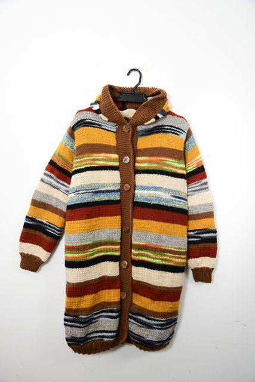
Abrigo multicolor con capucha
Abrigo largo tejido a mano en franjas de colores cálidos, con capucha y botones de madera.
Ver detalles →Chaleco calado en crochet
Chaleco crema con cuello en V y diseño calado, fresco y elegante.
Ver detalles →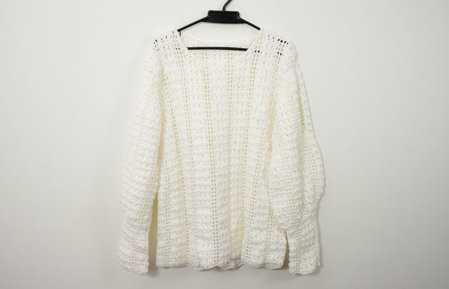
Cárdigan blanco calado
Cárdigan blanco de manga larga con textura en relieve y aberturas laterales.
Ver detalles →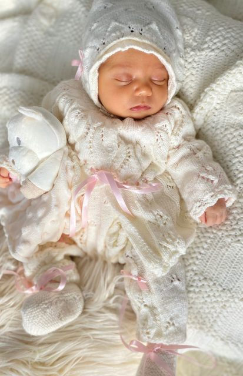
Conjunto de bebé tejido
Ajuar tejido para recién nacido: gorrito, chaqueta y accesorios con lazos de satín.
Ver detalles →Toalla bordada zigzag arcoíris
Toalla blanca con bordado en punto zigzag de colores y encaje.
Ver detalles →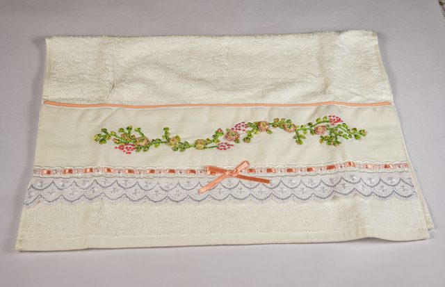
Toalla bordada flores y moño
Toalla con guirnalda de flores bordada, encaje y moño de cinta color durazno.
Ver detalles →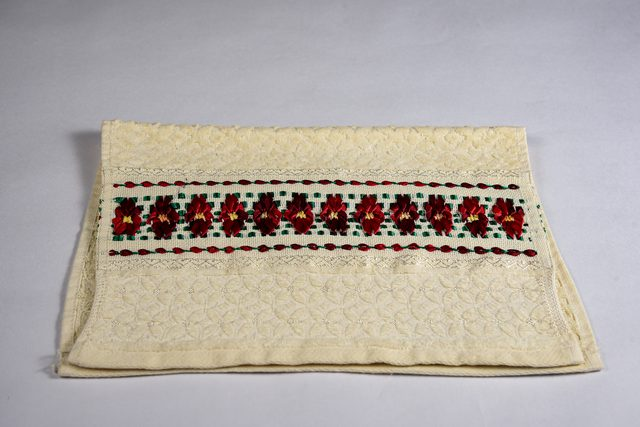
Toalla bordada flores rojas
Toalla crema con cinta de flores rojas bordadas en punto cruz.
Ver detalles →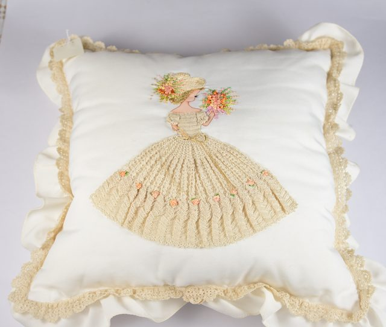
Cojín bordado dama antigua
Cojín blanco con dama bordada, vestido tejido en crochet y volante de encaje.
Ver detalles →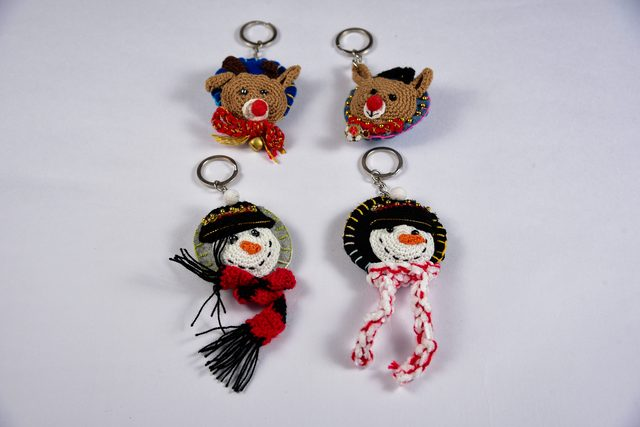
Llaveros renos y muñecos
Llaveros de renos y muñecos de nieve con bufanda.
Ver detalles →
Metros tejidos de colores
Cintas métricas forradas en crochet con diseño de mandala.
Ver detalles →
Guantes negros tejidos
Guantes negros tejidos a mano, cómodos y abrigados.
Ver detalles →
Llaveros amigurumi osos y conejo
Osos y conejo tejidos en amigurumi, con borla larga.
Ver detalles →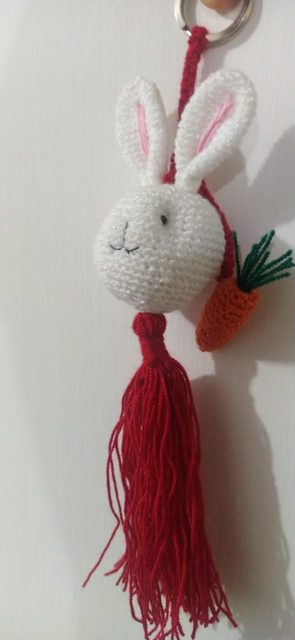
Conejo amigurumi con zanahoria
Llavero de conejo en amigurumi, con zanahoria de crochet y borla roja.
Ver detalles →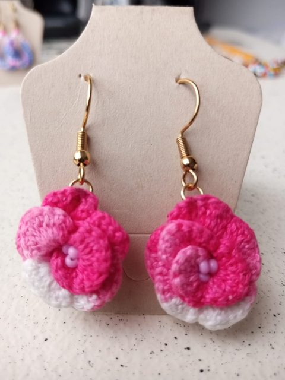
Aretes flores rosadas en crochet
Aretes de flor tejida en crochet, rosa fucsia y blanco, con centro de chaquira.
Ver detalles →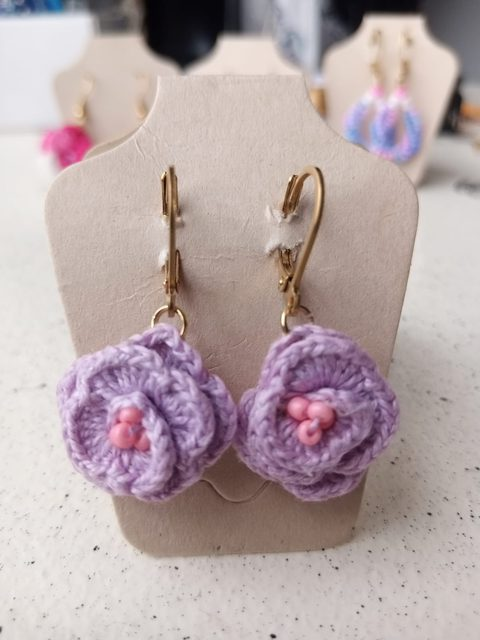
Aretes flores lilas en crochet
Aretes de flor en crochet color lila, con centro de chaquiras rosadas.
Ver detalles →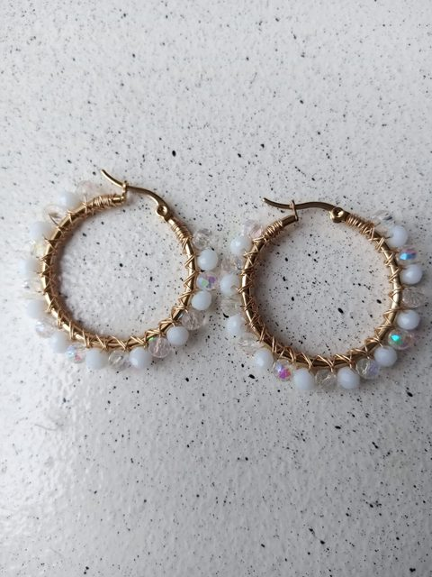
Aretes aro con cristales blancos
Aros dorados envueltos en alambre con cristales blancos.
Ver detalles →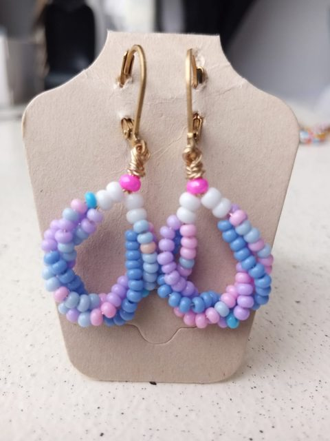
Aretes gota de chaquira azul y lila
Aretes en forma de gota tejidos en chaquira azul, lila y rosa.
Ver detalles →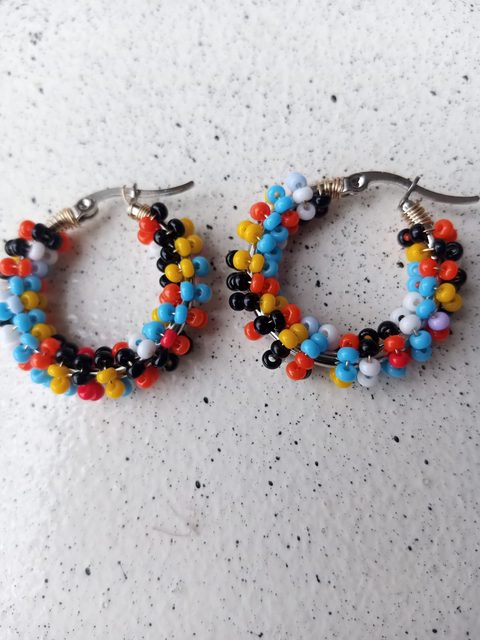
Aretes aro de chaquira multicolor
Aros cubiertos de chaquira multicolor: negro, rojo, amarillo y azul.
Ver detalles →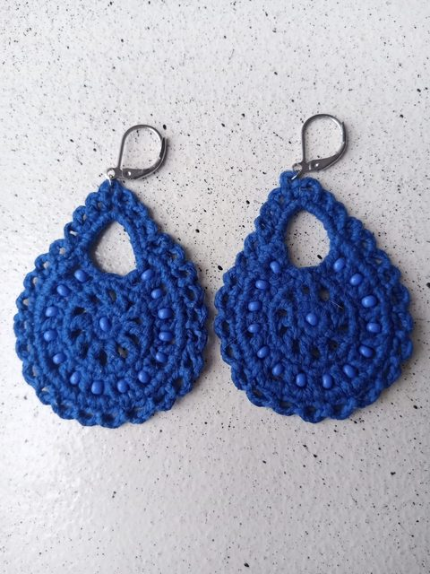
Aretes gota azul en crochet
Aretes de gota calada tejidos en crochet azul, con chaquiras.
Ver detalles →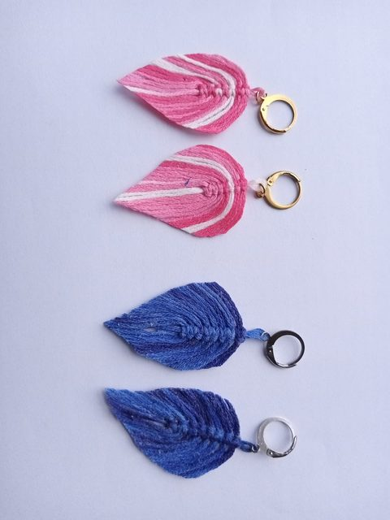
Aretes hojas en macramé
Aretes en forma de hoja tejidos en macramé con hilo, en rosa y azul.
Ver detalles →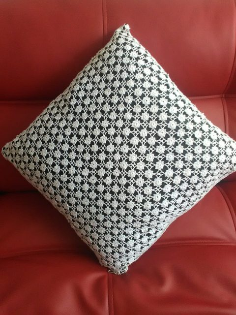
Cojín calado en crochet blanco
Cojín cubierto con crochet blanco de pequeñas flores caladas.
Ver detalles →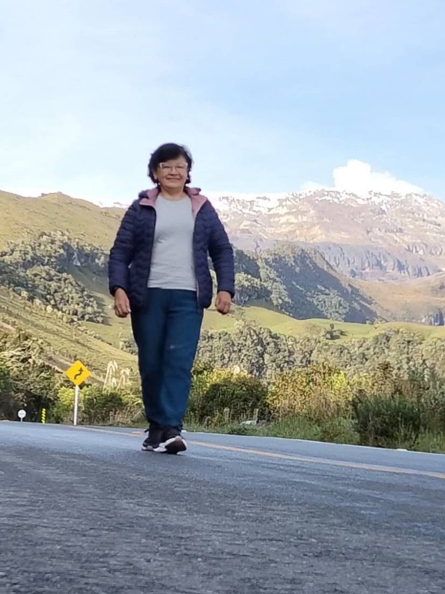
Sobre mí
Rosa Irlanda Alarcón Laverde
Toda su vida ha estado entre hilos y agujas. Rosa Irlanda ha dedicado su vida a tejer y a enseñar a tejer, y su conocimiento y sus manos son, en palabras de quienes trabajan con ella, “nuestra riqueza más grande”.
Ha trabajado junto a las tejedoras de Priah Heritage, una marca colombiana de tejido hecho a mano, donde la llaman “el alma de Priah”.
Además de tejer, elabora bisutería —aretes en crochet, chaquira y macramé—, con técnicas aprendidas en la Fundación Internacional María Luisa de Moreno, que impulsa la formación para el emprendimiento.
Rial Arte es su taller propio: chalecos, abrigos, toallas bordadas, cojines y llaveros, cada uno hecho puntada a puntada, con la paciencia y el cariño de toda una vida tejiendo.
“Cada puntada lleva un pedacito de mi historia.”
Video
Conoce a Rosa Irlanda
Ella misma te cuenta y te muestra su trabajo.
Galería
Momentos
Un vistazo al trabajo detrás de cada pieza.


Redes
Su trabajo en redes
Publicaciones de terceros donde se cuenta su trabajo como tejedora.
Comprar es fácil
Cómo comprar
- 1
Elige
Recorre el catálogo y abre el producto que te guste.
- 2
Escríbenos
Toca “Comprar por WhatsApp”: el mensaje ya sale escrito con el producto.
- 3
Acordamos
Hablamos de tallas, colores, precio, pago y envío directamente.
¿Buscas algo a tu medida?
También tejemos y bordamos por encargo. Cuéntanos tu idea.
Hablemos por WhatsApp